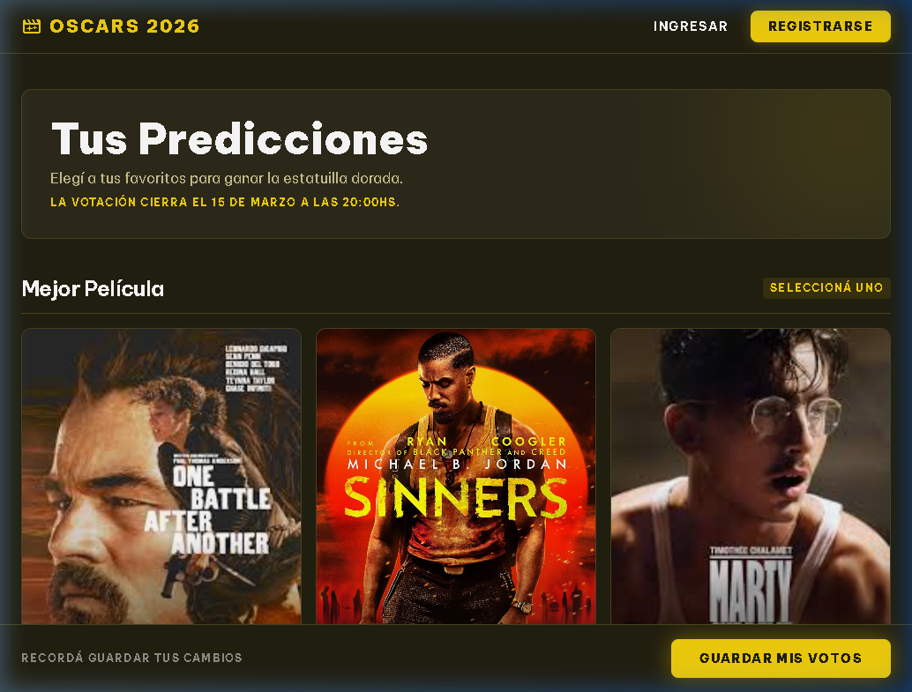

Oscars Prode 2026
HTML
CSS
Vanilla JS
Aplicación web interactiva para jugar al tradicional Prode de los Premios Oscar. Implementa diseño responsive, Dark Mode, persistencia de datos con LocalStorage y animaciones dinámicas con ScrollReveal, ofreciendo una experiencia de usuario moderna y atractiva.